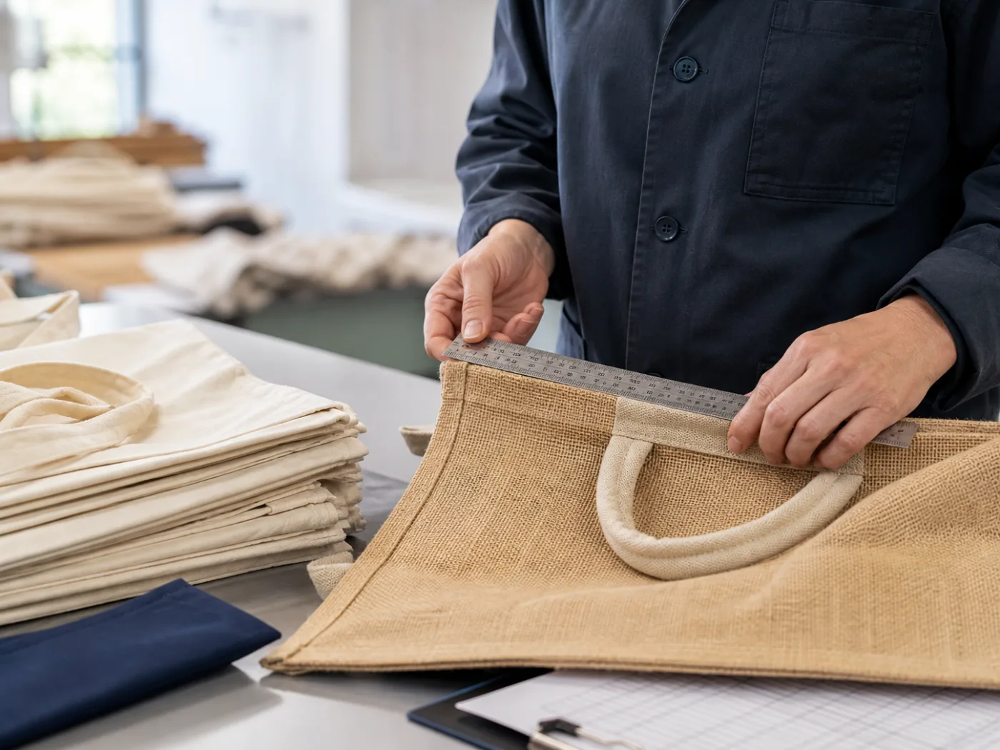

Transparent
Clear communication on price, timing, options and risk.
We help European businesses buy sustainable products with greater visibility, dependable quality and less supply-chain friction.
International sourcing can create value, but only when specifications, expectations and communication remain aligned. North Cliq acts as the accountable link between professional buyers and selected manufacturing partners.
We combine local understanding of European customer expectations with practical support across supplier selection, product development, pricing, sampling, production, quality assurance and logistics.
Our first portfolio centres on premium jute and cotton bags. As customer needs develop, we will extend the range with the same disciplined approach to sustainability, quality and commercial fit.

We do not treat sourcing as a simple hand-off. Buyers need clear choices, realistic timelines and early visibility when conditions change. Manufacturers need accurate briefs, responsive decisions and fair expectations.
Our job is to keep both sides aligned—so each order is commercially sound, technically clear and responsibly managed.
Clear communication on price, timing, options and risk.
Recommendations grounded in your use case and commercial reality.
One responsive partner from initial brief through delivery.
Specifications and checks designed to protect the finished result.
Book a focused discussion about your product needs, volumes and target market.